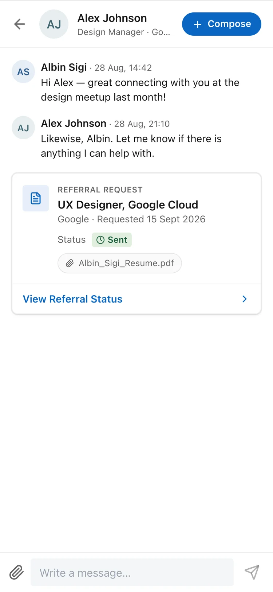
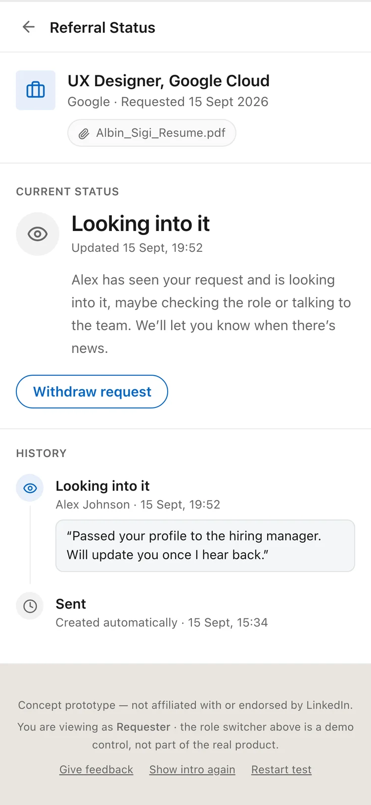
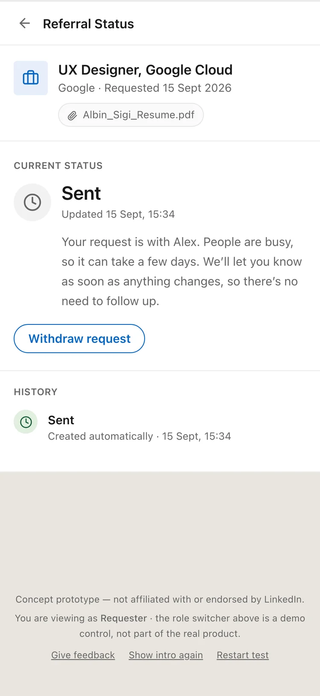
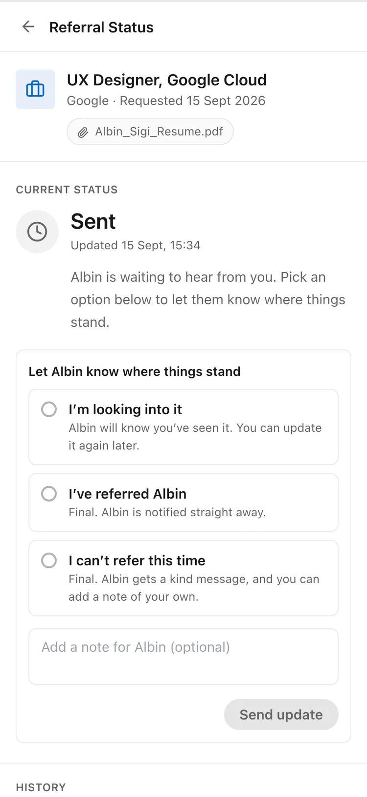
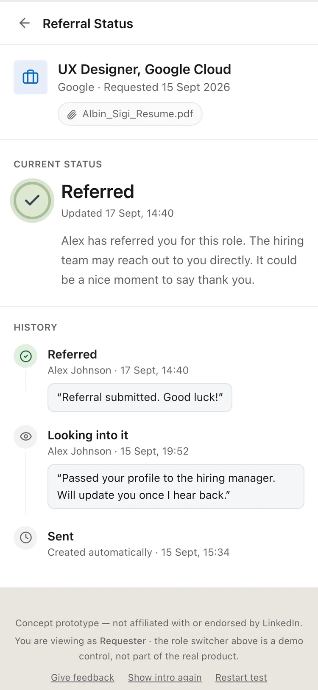
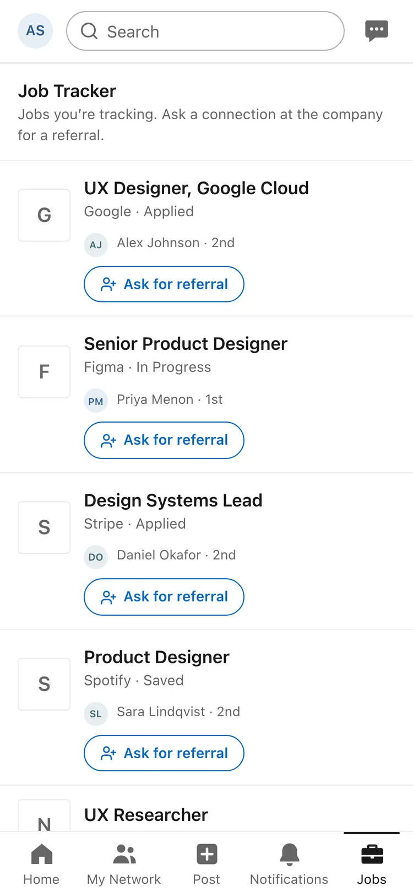
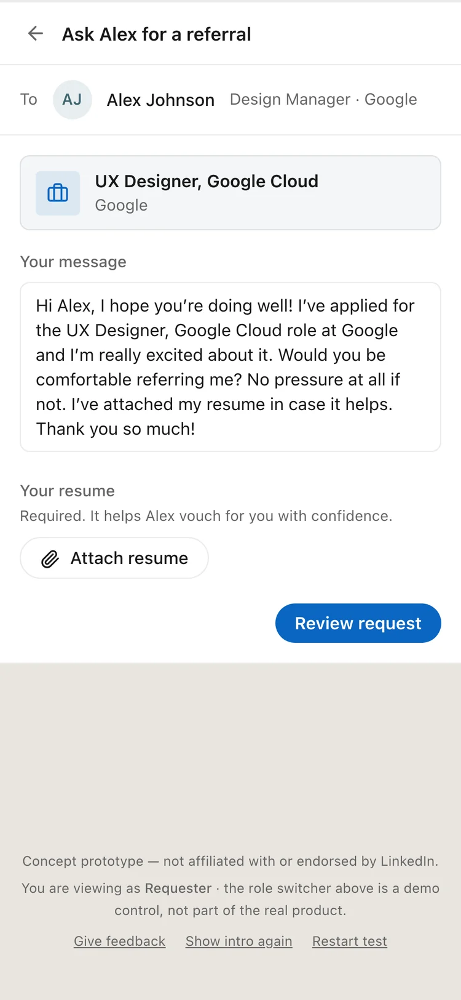
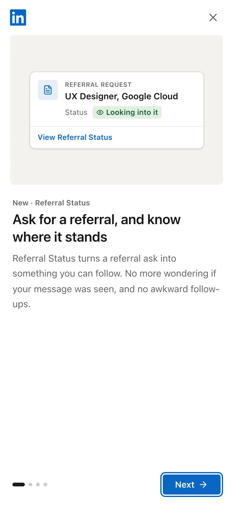
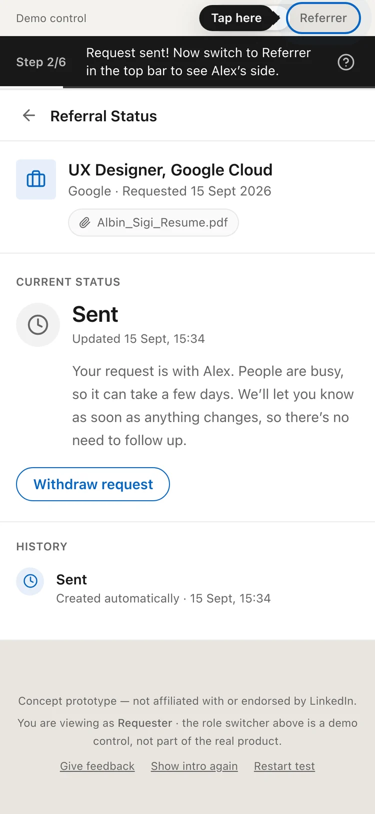

Case study 04 · Concept feature · Built and tested
You asked for a referral. Now you can see where it stands.
In 30 seconds
- The problem: You ask someone in your network for a referral, and then nothing. No reply is not the same as no, but it feels the same. So you send the awkward follow-up, and now two people are uncomfortable.
- What I did: Designed and built a working Referral Status feature. Six plain statuses, only the referrer sets the human ones, and the requester can follow it without chasing anyone.
- The result: A real prototype, not a clickable mockup. Four people ran the whole two-sided journey on their own phones and all four finished it.
Why I built this
Referrals are the quiet engine of hiring. Almost everyone I know has asked for one, and almost everyone has had the same experience after they asked: silence.
The silence is the actual problem. Not the no. A referrer who says "sorry, I can't this time" has given you something useful. You move on. But silence gives you nothing, so you fill it yourself. You reread your message. You wonder if it was seen. You wait four days and send a second one that starts with "just following up". Meanwhile the referrer is sitting on a message they fully intend to answer, feeling slightly guilty every time they open the app.
One missing piece of information is making both people feel bad. That is a design problem, not a people problem.

The ask lives in the conversation. It is a card in the thread, not a form somewhere else, so the request stays where the relationship already is.

The answer to "where is it?" One screen: what the status is, what it means in plain words, and everything that has happened so far.
What I deliberately did not build
The obvious version of this feature is a nudge button. Or read receipts. Or a reminder that pings the referrer every few days until they respond. All of those solve the requester's anxiety by moving it onto the referrer.
So I set one rule early and kept it: nothing in this feature puts pressure on the referrer. No nudges, no seen indicators, no countdowns pointed at them. The whole job of the feature is to remove the reason anyone needs to chase. If it ever created a new reason to chase, it had failed.
That single rule decided most of the smaller arguments later on.
Six statuses, and who is allowed to set them
This is the heart of the thing. Not the screens, the model underneath them.
I wrote six statuses and then wrote down, for each one, who is allowed to set it. That second column turned out to matter more than the first.
- Sent. Set by the system when the request is created. It is with them now.
- Looking into it. Set by the referrer. They have seen it and are working on it. Still open.
- No reply yet. Set by the system only, and never by a person. It is an observation, not an accusation.
- Referred. Set by the referrer. Final.
- Can't refer. Set by the referrer. Final, and worded so it costs nothing to say.
- Withdrawn. Set by the requester. You changed your mind, or you got the job another way.
The interesting one is "No reply yet". It is the only status the system infers, and it is the one that could most easily read as blame. So it is written as neutrally as I could manage, and it is the only non-final status that can be overwritten later. If the referrer responds a week after the system marked it quiet, their answer replaces the guess. A human action always beats a system assumption.

Sent. The copy does the work here. "There's no need to follow up" is the whole feature in six words.

The referrer's side. Three options, each one honest about whether it is final. Saying no is one tap and needs no explanation.

Referred. The history stays. You can see the whole arc, and there is a gentle prompt to go and say thank you.
Three decisions I would not have got right on the first pass
Building it myself meant I hit the edges I would have drawn right over in Figma. Three of them changed the design.
The current status is never stored. My first instinct was to keep a "currentStatus" field on the request and update it. That gives you two sources of truth, and the day they disagree, the screen confidently shows something that never happened. So the status is always worked out from the most recent update in the history. The history is the truth, and the badge is just the last line of it read aloud.
The request is not shown until it actually exists. Showing it optimistically and rolling it back on failure is fine for a like button. It is not fine here, because the requester would see "Sent" for a message that never left. So nothing appears until it is real.
One list decides which buttons exist. Every allowed status change lives in a single list, and every button anywhere in the app is drawn from it. There is no screen that can offer an action the model does not permit. Which is also why the final statuses simply have no buttons, instead of showing buttons that fail.
Two ways in, and I stopped guessing which one people would use
There are two honest moments where someone wants a referral: while they are messaging a person, and while they are looking at a job. So the feature has two entry points, from Messaging and from the Job Tracker.
I originally pointed testers at one of them, which was a mistake. It told me whether my preferred path worked, and nothing about which path people reach for. I removed the steer and recorded which one each person actually picked instead.

From the job. You are already looking at the role. The app shows who you know there, so asking is one tap away.

The ask, prewritten. The message is drafted for you and it ends with "no pressure at all if not", because the easiest referral to answer is one you are allowed to decline.
How I used AI, honestly
I did not hand-code this prototype and I am not going to pretend otherwise.
I used AI in three places. For secondary research, to gather what is already known about referral hiring and what people complain about, which I then used to frame the problem rather than as evidence on its own. For building, where I wrote the spec and the status model and worked through the prototype with Claude Code until the behaviour matched what I had specified. And for the interface details, where I matched LinkedIn's real colours, icons and iOS patterns using Mobbin as the reference.
What AI did not decide: the six statuses, who is allowed to set each one, the rule that nothing may pressure the referrer, the wording on every screen, or what to do when a tester got stuck. Those are the design, and they are mine. The value of building it this way was speed of a different kind. I got to a thing people could actually hold in about the time a static prototype would have taken, and testing a real thing tells you more.
Testing it with real people
The hard part of testing this feature is that it has two sides. A tester has to ask as one person, answer as another, then come back and see the result. That is a lot to explain, and an unmoderated tester who gets lost just closes the tab.
So the testing setup became a design problem of its own. A short intro explains the idea. A guide bar under the header names your next step, all the way through the journey. A spotlight points at the control you need when you need it. At the end, a short survey asks how it felt, whether it is useful and why, and what could be better. Every response is saved in the tester's browser and exported as a CSV.
Two details I only added after watching the first runs. Each new visit starts fresh, so nobody lands in the middle of a stranger's half-finished journey. And a refresh never wipes your progress, because a couple of people refreshed out of habit and I did not want to lose them.

Four screens of intro. Enough to explain a two-sided story, short enough that nobody skips it.

The guide bar and spotlight. Step 2 of 6, with the next control lit up. This is how one tester plays two people without getting lost.
Four people ran it end to end. All four finished the journey without help, and all four said they would use it.
Four people is a small number and I am not going to dress it up as more than it is. It is enough to tell me the idea reads and the flow holds. It is not enough to tell me how this behaves at LinkedIn's scale, where the referrer is a busy stranger and the requester is one of forty people who asked this month.
What is still open
One decision I left unresolved on purpose. When a requester withdraws, is that permanent?
In the prototype it behaves as final, but nothing in the interface claims it is, because I am genuinely not sure. Making it permanent is clean and protects the referrer from a request that keeps coming back. Making it reversible matches how people actually behave, since plans change and you might want to reopen the same ask a week later. I would want real usage data before choosing, and I would rather show the open question than invent a confident answer.
What I took from it
The feature is small. The thinking that made it work was almost entirely about who is allowed to say what, and what the product is allowed to assume when nobody says anything. Once that was settled, the screens were nearly obvious.
The other thing I took from it: building the prototype myself changed the design. Three of the decisions I am proudest of came from hitting a real edge case in a real build, not from drawing a happy path.